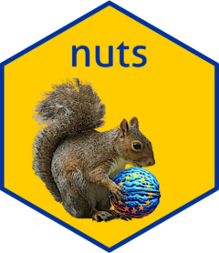

Helper function to test for multiple versions
Source:R/nuts_test_multiple_versions.R
nuts_test_multiple_versions.Rdnuts_test_multiple_versions is called from either nuts_convert_version or nuts_aggregate
to selects the most frequent version within groups or throw an error.
Arguments
- group_vars
Variable name(s) for classification within groups. Always computes overlap within country.
NULLby default.- multiple_versions
By default equal to
'error', when providing multiple NUTS versions within groups.- data_versions
Data versions
- data
A nuts.classified object returned by
nuts_classify().
Value
A tibble containing NUTS codes, the potential number of rows dropped and a message with the results of the test.
Examples
library(dplyr)
df <- manure %>%
filter(nchar(geo) == 5) %>%
select(geo, indic_ag, values) %>%
distinct(geo, .keep_all = TRUE) %>%
nuts_classify(nuts_code = "geo",
group_vars = "indic_ag",
data = .)
#>
#> ── Classifying version of NUTS codes ───────────────────────────────────────────
#> Within groups defined by country and indic_ag:
#> ! These NUTS codes cannot be identified or classified: ME000, NOZZZ, and SIZZZ.
#> ✖ Multiple NUTS versions classified. See the tibble 'versions_data' in the
#> output.
#> ✖ Missing NUTS codes detected. See the tibble 'missing_data' in the output.
nuts_test_multiple_versions(group_vars = "indic_ag",
multiple_versions = "most_frequent",
data_versions = df$versions_data,
data = df$data)
#> $data
#> # A tibble: 282 × 8
#> from_code from_version from_level country.x indic_ag values country.y
#> <chr> <chr> <dbl> <chr> <chr> <dbl> <chr>
#> 1 AT111 2021 3 Austria I07A1_EQ_Y 270 Austria
#> 2 AT112 2021 3 Austria I07A1_EQ_Y 455 Austria
#> 3 AT113 2021 3 Austria I07A1_EQ_Y 1385 Austria
#> 4 AT121 2021 3 Austria I07A1_EQ_Y 6485 Austria
#> 5 AT122 2021 3 Austria I07A1_EQ_Y 2988 Austria
#> 6 AT123 2021 3 Austria I07A1_EQ_Y 1799 Austria
#> 7 AT124 2021 3 Austria I07A1_EQ_Y 5668 Austria
#> 8 AT125 2021 3 Austria I07A1_EQ_Y 848 Austria
#> 9 AT126 2021 3 Austria I07A1_EQ_Y 979 Austria
#> 10 AT127 2021 3 Austria I07A1_EQ_Y 483 Austria
#> # ℹ 272 more rows
#> # ℹ 1 more variable: overlap_perc <dbl>
#>
#> $n_rows_dropped
#> [1] 739
#>
#> $message_multiple_versions
#> !
#> "{.blue Choosing most frequent version within group and {.red dropping} {n_rows_dropped} row{?s}.}"
#>